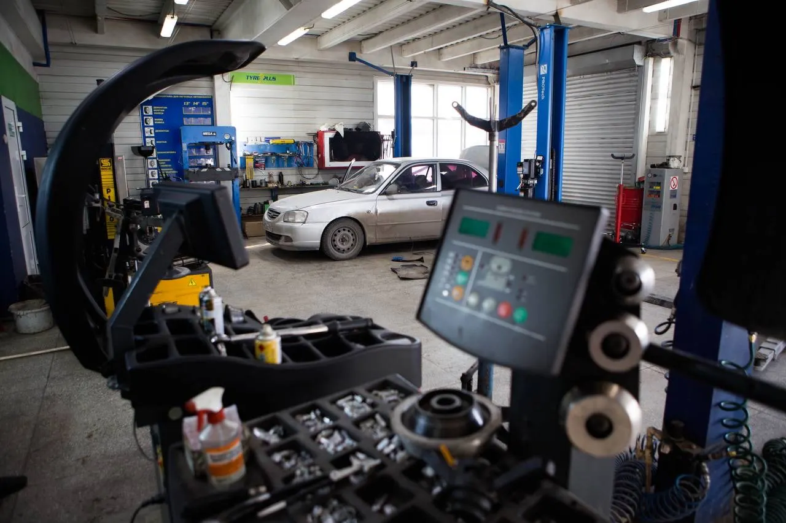
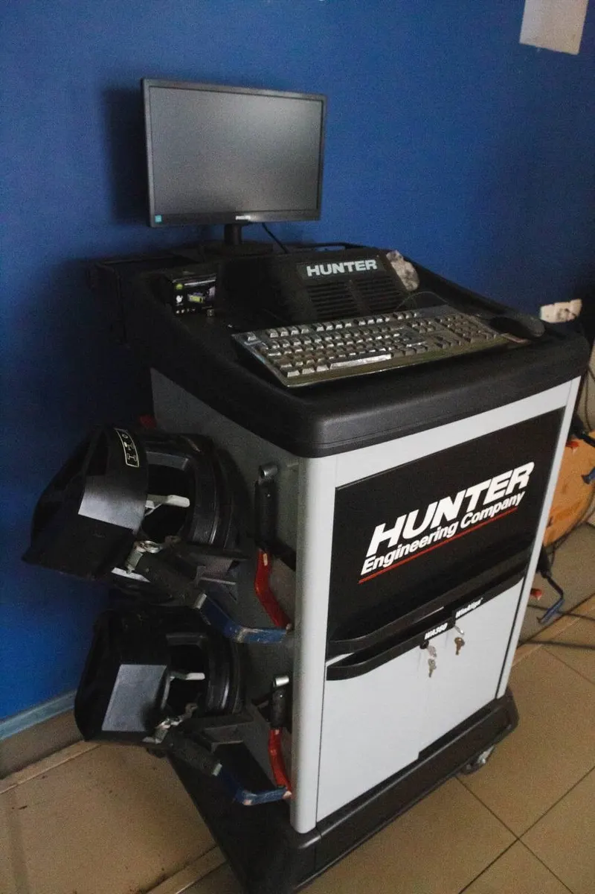
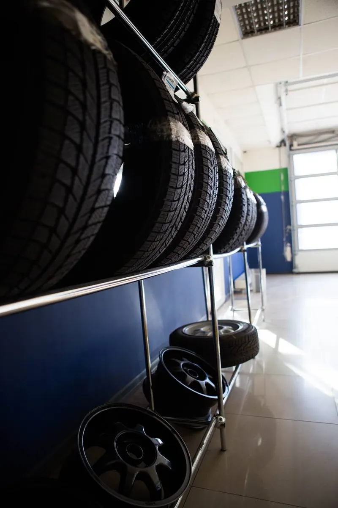
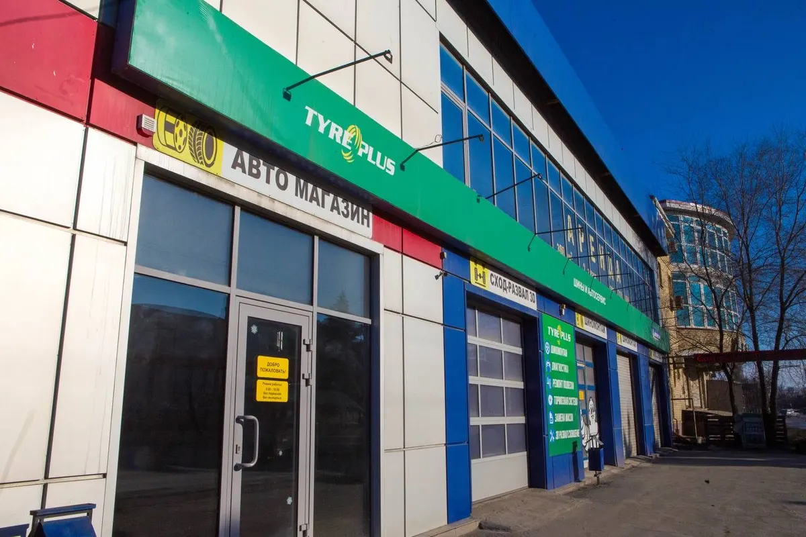

Шиномонтаж и сход-развал · Таганрог
Шиномонтаж и сход-развал в Таганроге – к своему времени
Цены по диаметру видны до приезда. Позвоните, договоритесь о времени – пока ждёте, есть зона отдыха, кофе и Wi-Fi.
- Работаем каждый день 08:00–18:00
- Шиномонтаж, балансировка, сход-развал в одном месте
- Время ожидания – 96 % положительных отзывов на Картах

Что можно сделать за один приезд
Входит
- Шиномонтаж и стендовая балансировка
- Ремонт проколов и боковых порезов
- Правка литых дисков
- Сход-развал
- Замена масла и диагностика
Отдельно, если нужно
- Шиномонтаж Pax System – отдельная цена
- Цена комплекса зависит от диаметра колеса
Цены известны до приезда
Цена шиномонтажа зависит от посадочного диаметра колеса. Цены с карточки на Яндекс Картах.
Шиномонтаж, за одно колесо
- Комплекс шиномонтажных работзависит от диаметраот 375 ₽
- Снятие и установка колесабез монтажа и балансировкиот 100 ₽
- Монтаж шиныот 60 ₽
- Стендовая балансировкаот 115 ₽
- Проверка балансировкиот 60 ₽
- Проверка давления и подкачка25 ₽
- Шиномонтаж Pax System, комплекс4 000 ₽
Ремонт и сход-развал
- Латка UP370 ₽
- Ремонт бокового порезаодно повреждениеот 400 ₽
- Правка литого дискаот 500 ₽
- Сход-развал, одна ось1 000 ₽
- Проверка сход-развалалегковые500 ₽
Автосервис
- Замена масла в двигателе700 ₽
- Диагностика500 ₽
- Осмотр автомобиля500 ₽
- Полировка фар500 ₽
- Аренда подъёмника500 ₽ час
Точную сумму за ваш диаметр назовём по телефону при записи.
Как проходит
- 01
Позвонили и договорились о времени
Работаем каждый день с 08:00 до 18:00.
- 02
Приехали в сервис
Котлостроительная, 37Б, есть парковка.
- 03
Машина в боксе – вы в зоне отдыха
Кофе и Wi-Fi, пока мастера работают.
- 04
Забираете машину
Сумма – по прайсу за ваш диаметр.



Почему к нам едут
Не навязываем лишних работ
Так пишут клиенты в отзывах на Картах.
Шиномонтаж и сход-развал в одном месте
Не нужно ехать в два сервиса.
Ждать удобно
Зона отдыха, кофе, Wi-Fi, парковка.
Работаем каждый день
С 08:00 до 18:00, без выходных.
Отзывы с Яндекс.Карт
«Лучший шиномонтаж Таганрога, добрый и приятный персонал. Угощают кофе и вкусняшками во время ожидания) Специалисты делают работу на совесть, сервис отличный»
Иван Воронков · 4 марта
«Мастера знают своё дело! Сход развал, шиномонтаж – только здесь. Есть зона отдыха. Цены приемлемые, не навязывают лишних работ.»
Данченко Н. · 2 марта
«Отличный сервис, делают быстро, качественно, вежливый персонал, всё расскажут и покажут. Работают каждый день – очень удобно.»
Арина Попова · 27 июля 2025
Отзывы с карточки на Яндекс.Картах, без правок.
Частые вопросы
Сколько стоит шиномонтаж?
Комплекс шиномонтажных работ – от 375 ₽ за колесо, цена зависит от посадочного диаметра. Точную сумму назовём по телефону.
Делаете сход-развал?
Да: регулировка – 1000 ₽ за ось, проверка – 500 ₽ для легковых.
Ремонтируете боковые порезы?
Да, от 400 ₽ за одно повреждение. Латка UP3 – 70 ₽.
Правите литые диски?
Да, от 500 ₽, цена зависит от диаметра.
Беретесь за Pax System?
Да, комплекс шиномонтажа Pax System – 4000 ₽ за колесо.
Где подождать, пока делают машину?
В зоне отдыха: есть кофе и Wi-Fi. У сервиса есть парковка.
Позвоните и приезжайте к своему времени
- Адрес
- Котлостроительная улица, 37Б, Таганрог
- Часы
- Ежедневно 08:00–18:00
- Телефон
- +7 (989) 538-66-86